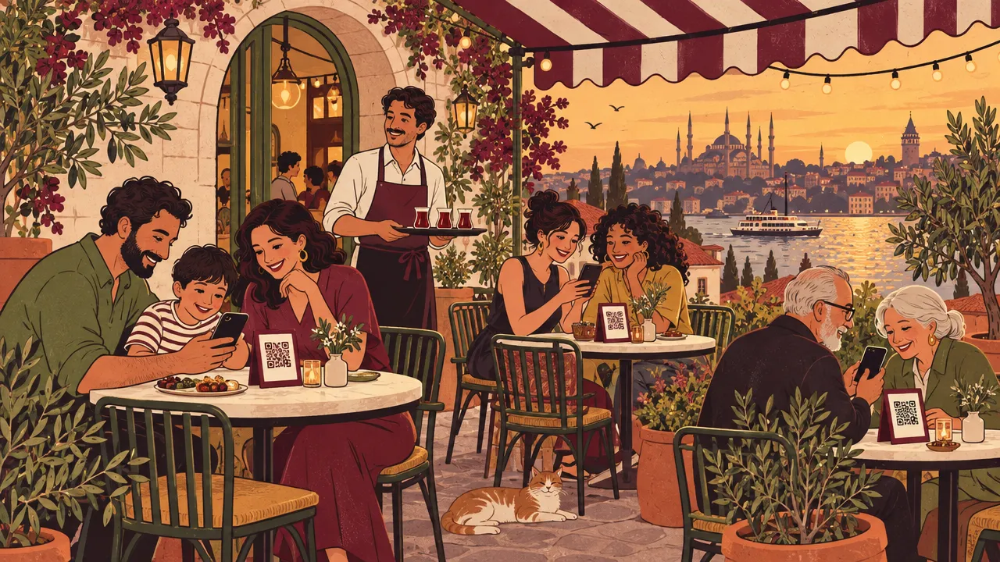
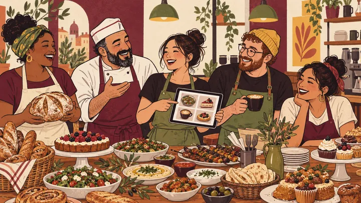
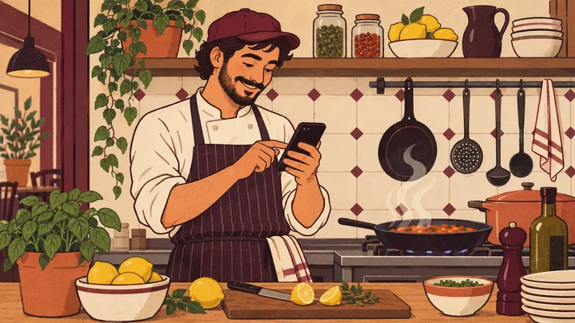

Lezzetini seç
Restoranına uyan tasarımı galeride canlı dene.
QR ve NFC ile açılan, misafirlerinin gerçekten sevdiği menüler. Tasarımını seç, yemeklerini ekle, onaydan sonra yayına al.
15 standart ve 15 premium tasarım. Kebapçıdan kafeye, fırından fine dining'e. Hepsini canlı dene, kayıt gerekmez.
Kebapçılar, fırıncılar, baristalar, tatlıcılar. AuraMenu, misafirini seven küçük ve büyük işletmeler için yapıldı.



Görseller AuraMenu için çizilmiş illüstrasyonlardır.
Restoranına uyan tasarımı galeride canlı dene.
Yemekleri, fiyatları, fotoğrafları, alerjenleri ekle. Önizleme anında güncellenir.
Talebin AuraDigital paneline düşer; ödeme kontrolünden sonra onaylanır.
Menün kendi adresinde yayında. QR ve NFC kartın hep aynı bağlantıyı açar.
30 tasarımın hepsi aynı güçlü menü motorunu kullanır. Tasarım değiştirsen bile verilerin ve QR kodun aynı kalır.
Menünü AuraDigital NFC kartı veya QR standıyla eşleştir. Misafir dokunur ya da okutur, menü anında açılır.
Aylık ya da yıllık öde; barındırma ve menü düzenleme her planda dahil.
Kendin hazırla, kendin yönet.
Menün ve öncelikli destek.
Yılda bir kez öde.
Ödemeler banka havalesiyle yapılır ve onaydan sonra menün yayına girer; otomatik kart çekimi yoktur. Özel tasarım isteyenler için AuraDigital ayrı teklif hazırlar.
Tasarlamak ve önizlemek ücretsiz. Yayın, ödeme ve AuraDigital onayından sonra açılır.